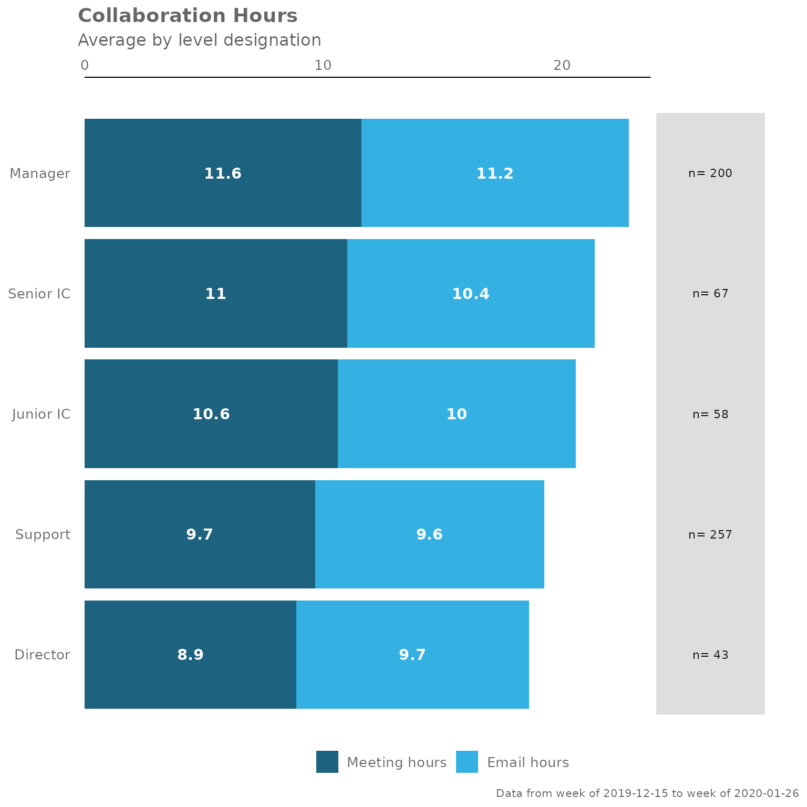
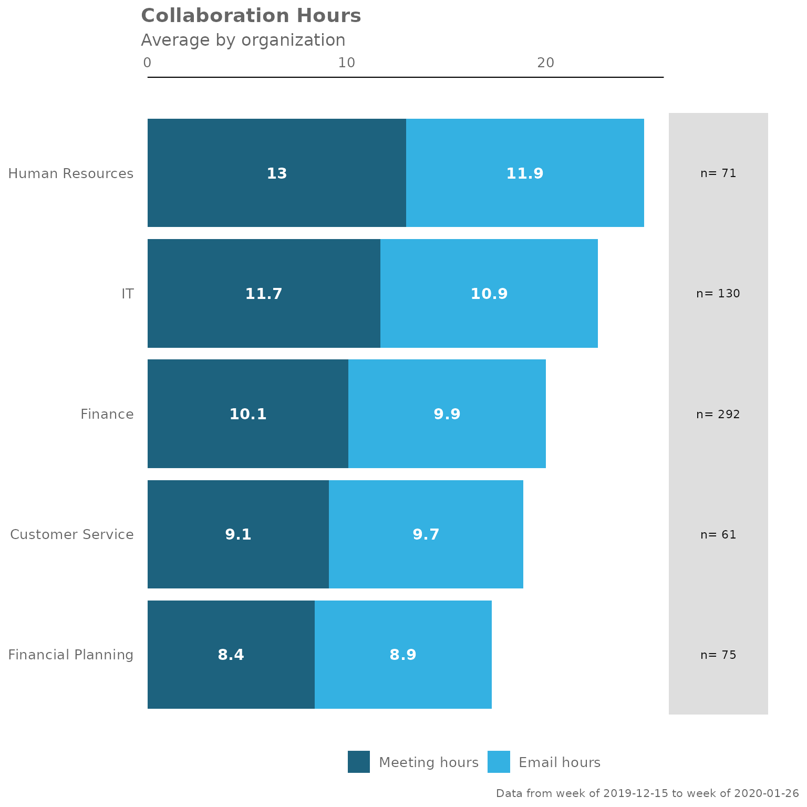
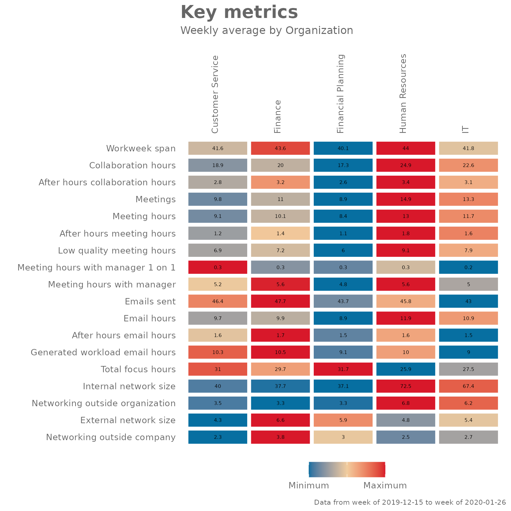
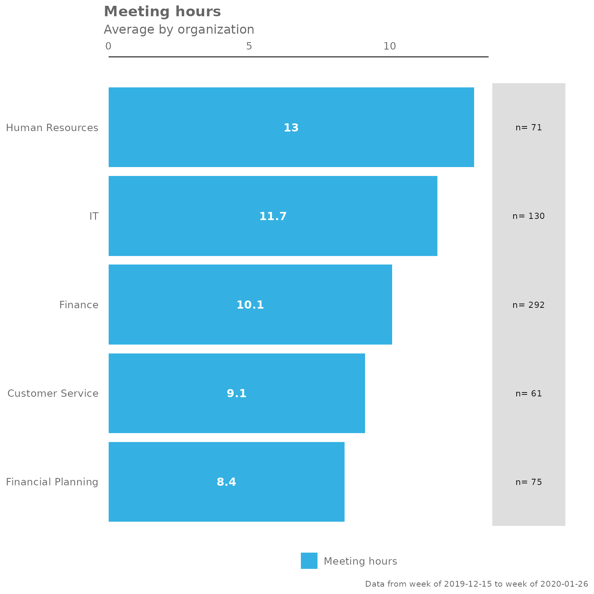
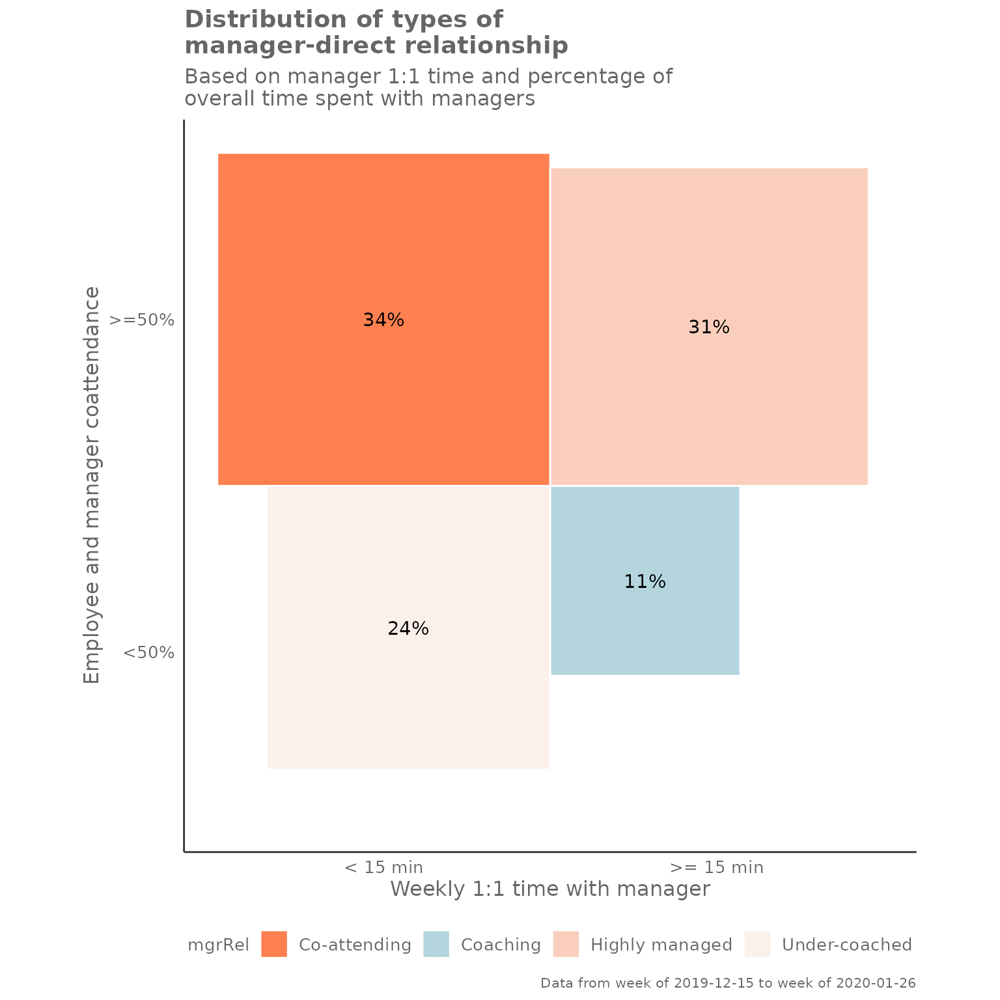
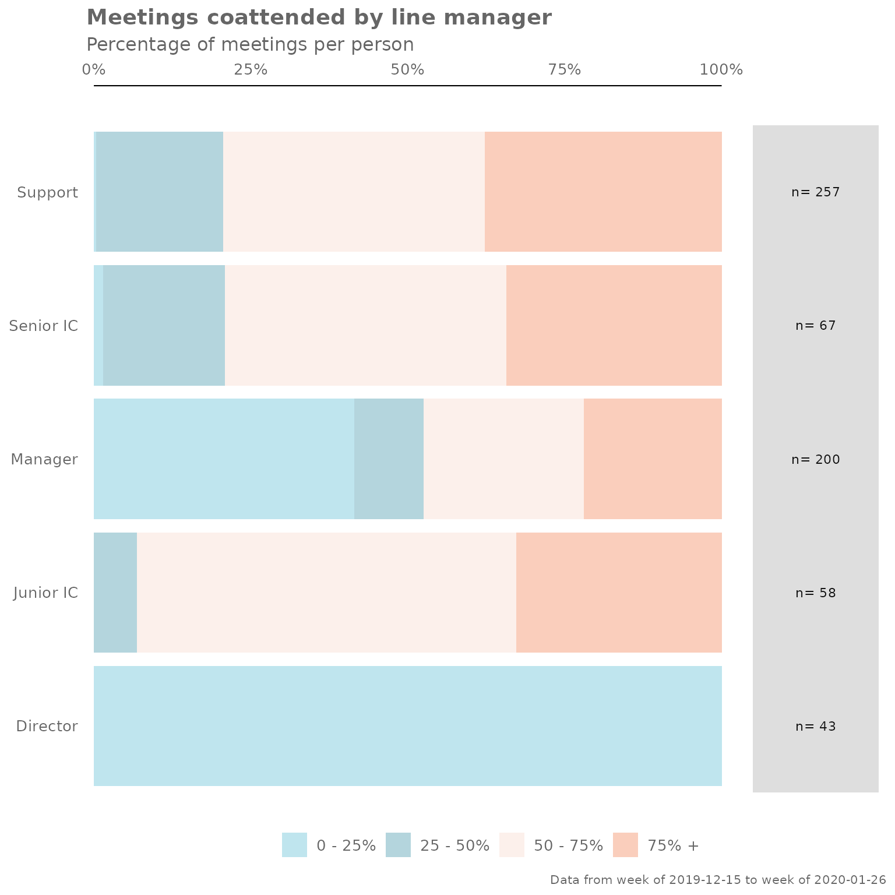
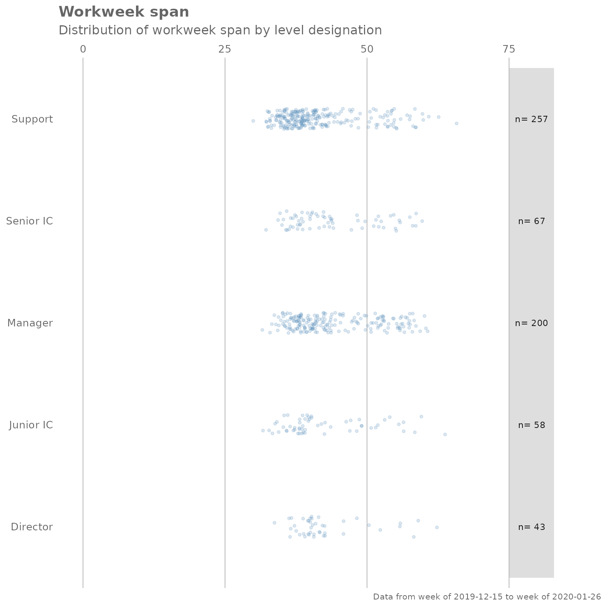
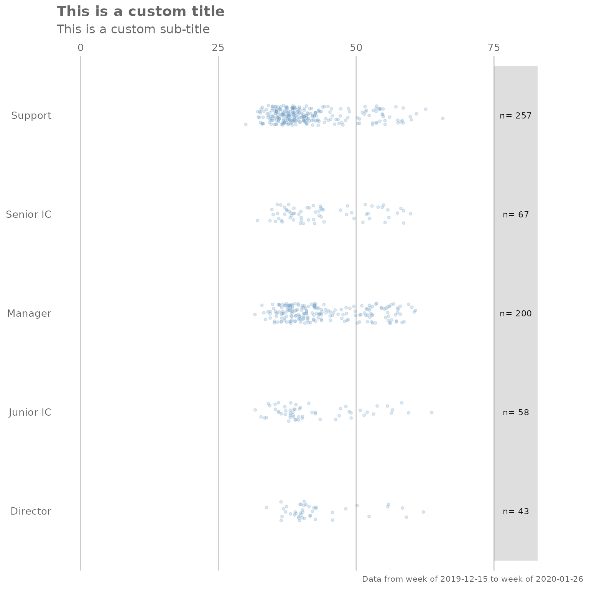

This document walks through the wpa package, and provides some examples on how to use some of the functions. For our full online documentation for the package, please visit https://microsoft.github.io/wpa/. For anything else related to Workplace Analytics, please visit https://docs.microsoft.com/en-us/workplace-analytics/.
To start off using wpa, you’ll have to load it by
running library(wpa). For the purpose of our examples,
let’s also load dplyr as a component package of
tidyverse (alternatively, you can just run
library(tidyverse):
The package ships with a standard Person query dataset
sq_data:
data("sq_data") # Standard Query data
# Check what the first ten columns look like
sq_data %>%
.[,1:10] %>%
glimpse()
#> Rows: 4,403
#> Columns: 10
#> $ PersonId <chr> "93F763956FFC939A5DDE7D…
#> $ Date <chr> "12/15/2019", "12/22/20…
#> $ Workweek_span <dbl> 44.08445, 34.65234, 44.…
#> $ Meetings_with_skip_level <dbl> 0, 1, 0, 0, 0, 0, 0, 0,…
#> $ Meeting_hours_with_skip_level <dbl> 0.00, 1.75, 0.00, 0.00,…
#> $ Generated_workload_email_hours <dbl> 11.944683, 8.696826, 11…
#> $ Generated_workload_email_recipients <dbl> 172, 131, 170, 99, 88, …
#> $ Generated_workload_instant_messages_hours <dbl> 0.9147075, 0.7100814, 1…
#> $ Generated_workload_instant_messages_recipients <dbl> 78, 65, 86, 54, 56, 66,…
#> $ Generated_workload_call_hours <dbl> 11.1666667, 0.0000000, …The collaboration_summary() function allows you to
generate a stacked bar plot summarising the email and meeting hours by
an HR attribute you specify:
sq_data %>% collaboration_summary(hrvar = "LevelDesignation")
By changing the hrvar() argument, you can change the
data being shown easily:
sq_data %>% collaboration_summary(hrvar = "Organization")
The collaboration_summary() function also comes with an
option to return summary tables, rather than plots. Just specify “table”
in the return argument:
sq_data %>% collaboration_summary(hrvar = "LevelDesignation", return = "table")
#> # A tibble: 5 × 5
#> group Meeting_hours Email_hours Total Employee_Count
#> <chr> <dbl> <dbl> <dbl> <int>
#> 1 Director 8.87 9.74 18.6 43
#> 2 Junior IC 10.6 9.97 20.6 58
#> 3 Manager 11.6 11.2 22.8 200
#> 4 Senior IC 11.0 10.4 21.4 67
#> 5 Support 9.66 9.60 19.3 257The keymetrics_scan() function allows you to produce
summary metrics from the Standard Person Query data. Similar to most of
the functions in this package, you can specify what output to return
with the return argument. In addition, you have to specify
which HR attribute/variable to use as a grouping variable with the
hrvar argument.
There are two valid return values for
keymetrics_scan():
return = "plot")return = "table")And here are what the outputs look like.
Heatmap:
sq_data %>% keymetrics_scan(hrvar = "Organization", return = "plot")
#> Warning: Using `size` aesthetic for lines was deprecated in ggplot2 3.4.0.
#> ℹ Please use `linewidth` instead.
#> ℹ The deprecated feature was likely used in the wpa package.
#> Please report the issue at <https://github.com/microsoft/wpa/issues/>.
#> This warning is displayed once per session.
#> Call `lifecycle::last_lifecycle_warnings()` to see where this warning was
#> generated.
Summary table:
sq_data %>% keymetrics_scan(hrvar = "Organization", return = "table")
#> # A tibble: 19 × 6
#> variable `Customer Service` Finance `Financial Planning` `Human Resources`
#> <fct> <dbl> <dbl> <dbl> <dbl>
#> 1 Workweek_s… 41.6 43.6 40.1 44.0
#> 2 Collaborat… 18.9 20.0 17.3 24.9
#> 3 After_hour… 2.84 3.16 2.56 3.43
#> 4 Meetings 9.76 11.0 8.87 14.9
#> 5 Meeting_ho… 9.12 10.1 8.39 13.0
#> 6 After_hour… 1.24 1.43 1.05 1.79
#> 7 Low_qualit… 6.87 7.25 5.98 9.07
#> 8 Meeting_ho… 0.327 0.260 0.253 0.277
#> 9 Meeting_ho… 5.18 5.61 4.77 5.62
#> 10 Emails_sent 46.4 47.7 43.7 45.8
#> 11 Email_hours 9.74 9.93 8.89 11.9
#> 12 After_hour… 1.60 1.73 1.51 1.64
#> 13 Generated_… 10.3 10.5 9.12 9.97
#> 14 Total_focu… 31.0 29.7 31.7 25.9
#> 15 Internal_n… 40.0 37.7 37.1 72.5
#> 16 Networking… 3.53 3.29 3.34 6.76
#> 17 External_n… 4.34 6.58 5.94 4.82
#> 18 Networking… 2.29 3.77 2.99 2.50
#> 19 Employee_C… 61 292 75 71
#> # ℹ 1 more variable: IT <dbl>The meeting_summary() provides a very similar output to
the previous functions, but focusses on meeting habit data. Again, the
input data is the Standard Query, and you will need to specify a HR
attribute/variable to use as a grouping variable with the
hrvar argument.
There are two valid return values for
meeting_summary():
return = "plot")return = "table")The idea is that functions in this package will share a consistent design, and the required arguments and outputs will be what users ‘expect’ as they explore the package. The benefit of this is to improve ease of use and adoption.
And here are what the outputs look like, for
meeting_summary().
Heatmap:
sq_data %>% meeting_summary(hrvar = "Organization", return = "plot")
Summary table:
sq_data %>% meeting_summary(hrvar = "Organization", return = "table")
#> # A tibble: 5 × 3
#> group Meeting_hours n
#> <chr> <dbl> <int>
#> 1 Customer Service 9.12 61
#> 2 Finance 10.1 292
#> 3 Financial Planning 8.39 75
#> 4 Human Resources 13.0 71
#> 5 IT 11.7 130The mgrrel_matrix() function from {wpa} enables you to
plot a 2 by 2 matrix straight from the Standard Query data, which is
returned as a ggplot object:
sq_data %>% mgrrel_matrix()
By changing the return argument, you can also return a
summary table:
sq_data %>% mgrrel_matrix(hrvar = "LevelDesignation", return = "table")
#> # A tibble: 18 × 4
#> mgrRel LevelDesignation n perc
#> <fct> <chr> <int> <dbl>
#> 1 Co-attending Junior IC 29 0.5
#> 2 Co-attending Manager 47 0.235
#> 3 Co-attending Senior IC 26 0.388
#> 4 Co-attending Support 110 0.428
#> 5 Coaching Director 7 0.163
#> 6 Coaching Junior IC 1 0.0172
#> 7 Coaching Manager 40 0.2
#> 8 Coaching Senior IC 7 0.104
#> 9 Coaching Support 14 0.0545
#> 10 Highly managed Junior IC 25 0.431
#> 11 Highly managed Manager 48 0.24
#> 12 Highly managed Senior IC 27 0.403
#> 13 Highly managed Support 94 0.366
#> 14 Under-coached Director 36 0.837
#> 15 Under-coached Junior IC 3 0.0517
#> 16 Under-coached Manager 65 0.325
#> 17 Under-coached Senior IC 7 0.104
#> 18 Under-coached Support 39 0.152Alternatively, you can return the input data that is used to create the plot:
sq_data %>% mgrrel_matrix(hrvar = "LevelDesignation", return = "chartdata")
#> # A tibble: 18 × 10
#> LevelDesignation mgr1on1 coattendande n perc xmin xmax ymin ymax
#> <chr> <chr> <chr> <int> <dbl> <dbl> <dbl> <dbl> <dbl>
#> 1 Director < 15 min <50% 36 0.837 -0.915 0 -0.915 0
#> 2 Director >= 15 m… <50% 7 0.163 0 0.403 -0.403 0
#> 3 Junior IC < 15 min <50% 3 0.0517 -0.227 0 -0.227 0
#> 4 Junior IC < 15 min >=50% 29 0.5 -0.707 0 0 0.707
#> 5 Junior IC >= 15 m… <50% 1 0.0172 0 0.131 -0.131 0
#> 6 Junior IC >= 15 m… >=50% 25 0.431 0 0.657 0 0.657
#> 7 Manager < 15 min <50% 65 0.325 -0.570 0 -0.570 0
#> 8 Manager < 15 min >=50% 47 0.235 -0.485 0 0 0.485
#> 9 Manager >= 15 m… <50% 40 0.2 0 0.447 -0.447 0
#> 10 Manager >= 15 m… >=50% 48 0.24 0 0.490 0 0.490
#> 11 Senior IC < 15 min <50% 7 0.104 -0.323 0 -0.323 0
#> 12 Senior IC < 15 min >=50% 26 0.388 -0.623 0 0 0.623
#> 13 Senior IC >= 15 m… <50% 7 0.104 0 0.323 -0.323 0
#> 14 Senior IC >= 15 m… >=50% 27 0.403 0 0.635 0 0.635
#> 15 Support < 15 min <50% 39 0.152 -0.390 0 -0.390 0
#> 16 Support < 15 min >=50% 110 0.428 -0.654 0 0 0.654
#> 17 Support >= 15 m… <50% 14 0.0545 0 0.233 -0.233 0
#> 18 Support >= 15 m… >=50% 94 0.366 0 0.605 0 0.605
#> # ℹ 1 more variable: mgrRel <fct>The mgrcoatt_dist() function generates the distribution
of meeting co-attendance rate of staff with managers.
sq_data %>% mgrcoatt_dist(hrvar = "LevelDesignation")
A table can be generated:
sq_data %>% mgrcoatt_dist(hrvar = "LevelDesignation", return = "table")
#> # A tibble: 5 × 5
#> group `0 - 25%` `25 - 50%` `50 - 75%` `75% +`
#> <chr> <dbl> <dbl> <dbl> <dbl>
#> 1 Director 1 NA NA NA
#> 2 Junior IC NA 0.0690 0.603 0.328
#> 3 Manager 0.415 0.11 0.255 0.22
#> 4 Senior IC 0.0149 0.194 0.448 0.343
#> 5 Support 0.00389 0.202 0.416 0.377With a few rare exceptions such as track_HR_change(),
the majority of plot outputs returned by wpa functions
are ggplot outputs. What this means is that there is a lot of
flexibility in adding or overriding visual elements in the plots. For
instance, you can take the following ‘fizzy drink’ (jittered scatter)
plot:
sq_data %>%
workloads_fizz(hrvar = "LevelDesignation", return = "plot")
… and add custom titles, subtitles, and flip the axes by adding ggplot layers:
library(ggplot2) # Requires ggplot2 for customizations
sq_data %>%
workloads_fizz(hrvar = "LevelDesignation", return = "plot") +
labs(title = "This is a custom title",
subtitle = "This is a custom sub-title") +
coord_flip() # Flip coordinates
#> Coordinate system already present.
#> ℹ Adding new coordinate system, which will replace the existing one.
Note that the “pipe” syntax changes from %>% to
+ once you are manipulating a ggplot output, which will
return an error if not used correctly.
Adding customized elements may ‘break’ the visualization, so please exercise caution when doing so.
For more information on ggplot, please visit https://ggplot2.tidyverse.org/.
The collaboration_report() function enables you to get a
quick view of the Standard Query data by producing an automated HTML
report. This can be done by passing the dataset as the argument:
sq_data %>% collaboration_report()Running the function will open up a HTML report in your browser, summarising the key collaboration metrics and plots of the Standard Person Query. You can manually save this report, or only have it open as an ad-hoc reference document.
Hope you found this useful! If you have any suggestions or feedback, please log them at https://github.com/microsoft/wpa/issues/.